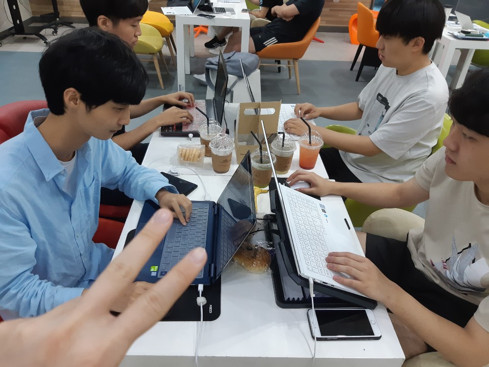

오늘은 네번째 모각코를 한 날짜입니다.
오늘은 모든 인원이 함께 모여 코딩을 했어요.
목표 공유와 회고
김경민: Node.js 공부
오늘은 백엔드 언어중 하나인 Node.js를 설치하고 공부하여 웹 서버를 localhost에 할당하여 실습해보는 시간을 가졌습니다.
문영균: 안드로이드 스튜디오를 활용해 로딩페이지 제작 및 레이아웃 수정과 알고리즘제작
오늘은 Bottom Up 프로젝트를 위해 로딩페이지 제작 및 레이아웃 수정과 날씨의 변화에 따른 이미지 변화를 해주는 알고리즘을 만들었습니다.
박재우: 안드로이드 스튜디오를 활용해 로딩페이지 제작 및 레이아웃 수정과 알고리즘제작
오늘은 Bottom Up 프로젝트를 위해 로딩페이지 제작 및 레이아웃 수정과 날씨의 변화에 따른 이미지 변화를 해주는 알고리즘을 만들었습니다.
안준혁: 웹서버 만들기
오늘은 웹서버인 아파치를 설치하고 다른 디바이스로 할당된 URL로 들어가는 실습을 하였습니다..
유찬희: 안드로이드 스튜디오를 활용해 로딩페이지 제작 및 레이아웃 수정과 알고리즘제작
오늘은 Bottom Up 프로젝트를 위해 로딩페이지 제작 및 레이아웃 수정과 날씨의 변화에 따른 이미지 변화를 해주는 알고리즘을 만들었습니다.